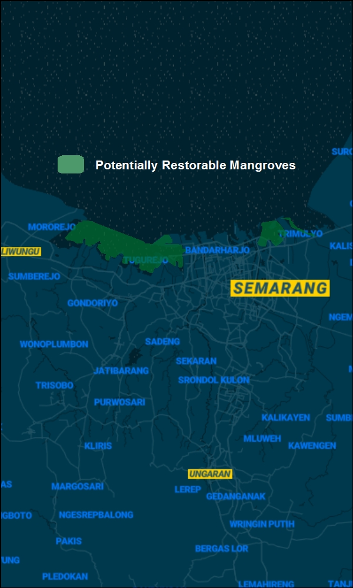
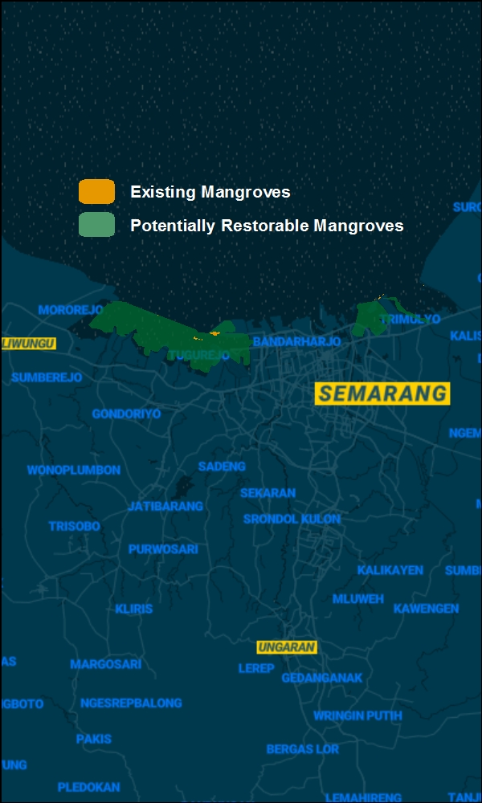
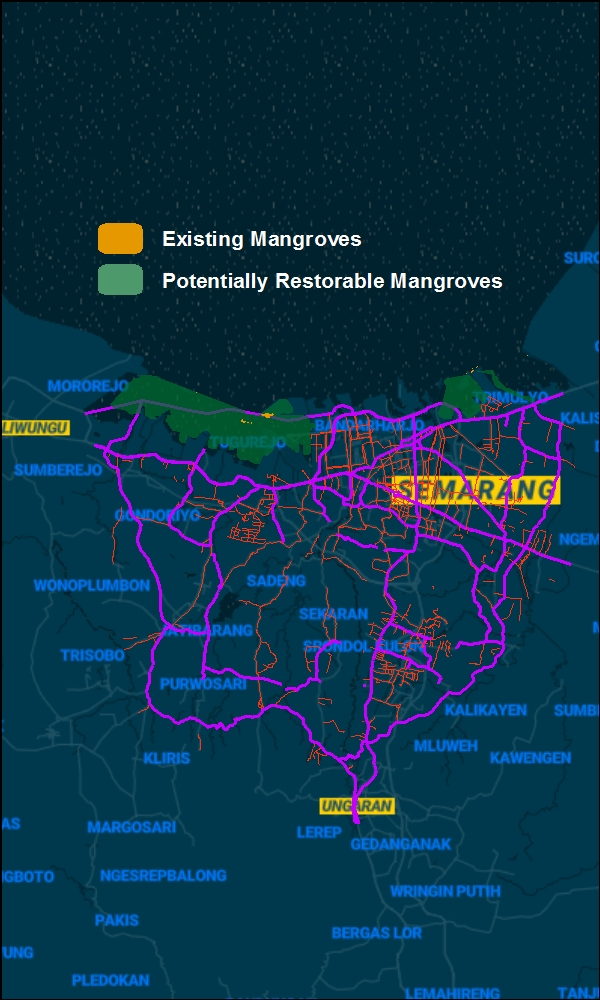
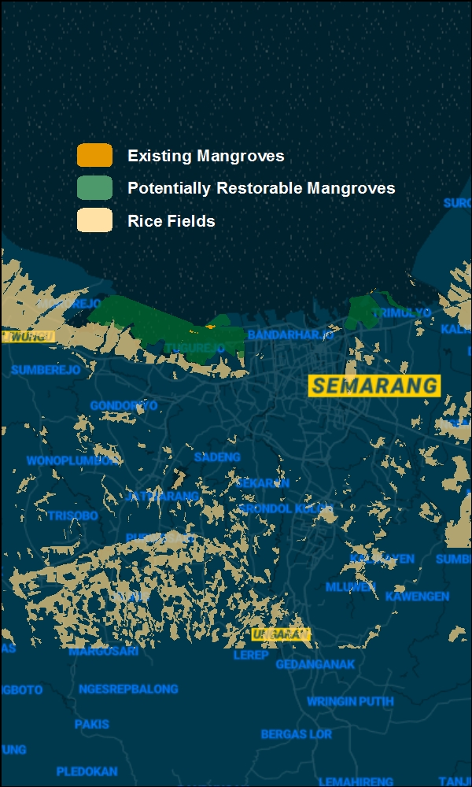
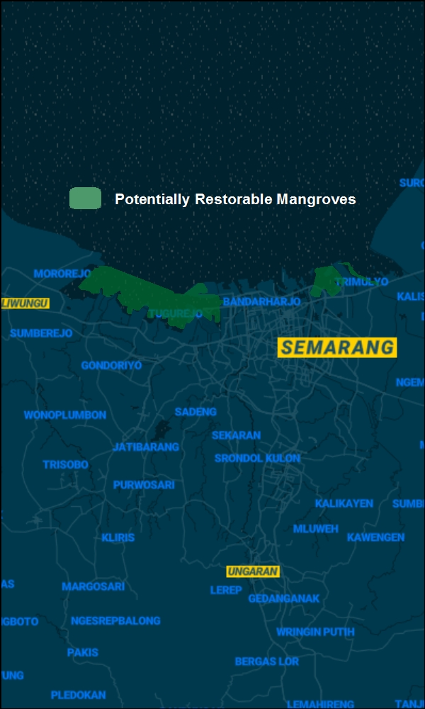
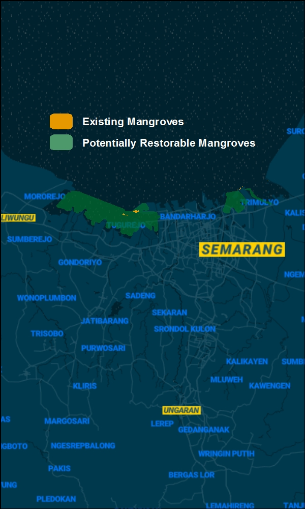
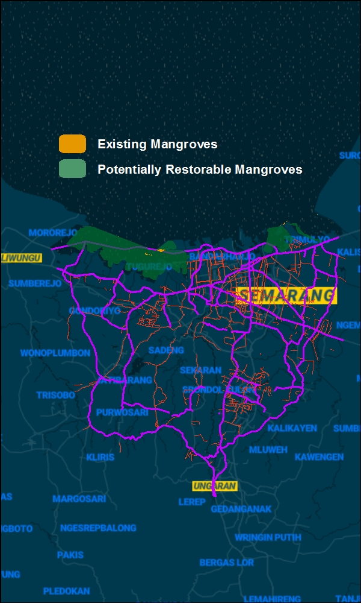
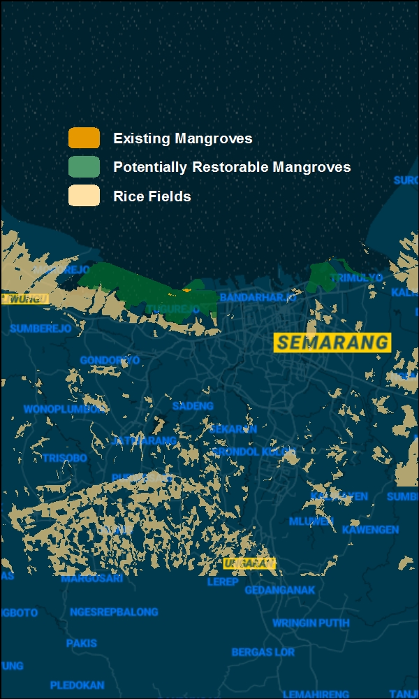

In 2015 the Global Disaster Preparedness Center began a city coalition-building project across Southeast Asia with local Red Cross Societies to build tools to help problem solve around specific hazards.
The Nature Conservancy is partnering with the Preparedness Center and the Red Cross Society in Indonesia to identify climate adaptation solutions that increase the resilience of communities from flooding.
Mangroves can reduce as much as 66% of wave height, easing coastal erosion and flood risk.
Natural barriers save money by reducing the impacts of storms and flooding to people and critical infrastructure.
Coastal ecosystems are valuable for mitigating flood risk, supporting environmental, development and humanitarian goals.


 






